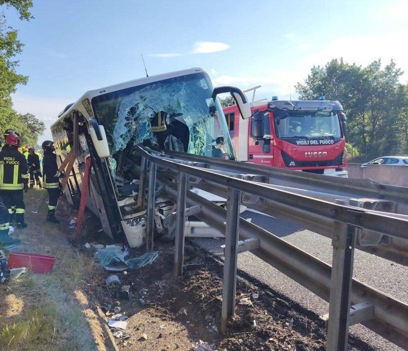

一辆游览车4日在意大利高速公路发生冲撞护栏的严重车祸，造成1人死亡，20多人受伤。根据义媒报导，车上载的是中国游客，但意大利警方目前未提供更多相关细节。
意大利托斯卡尼大区（Tuscany）首长吉亚尼（Eugenio Giani）在官方X平台贴文表示，发生车祸的游览车上载有45位中国游客。
这起意外发生在意大利A1高速公路，靠近中部知名城市阿雷佐（Arezzo）。意外现场画面惊悚，游览车前方整个插进了路旁护栏，车头全毁。意外造成1人死亡，20多人受伤，其中有2人伤势严重。
警方目前仍在调查，游览车为何会失控撞上路边护栏。当时游览车应是在高速下冲撞护栏，才会导致车头整片玻璃破裂，护栏甚至深深穿入了车体内。
伤势最严重的3人，被送往邻近大城西恩那（Siena），另有9名伤患被送往阿雷佐，9名伤患被送往瓦德拉诺（Valdarno），其中有3名伤患是未成年人。
因车祸伤患众多、情况严重，当地政府除了出动10多辆救护车，也派出消防直升机协助救援。
